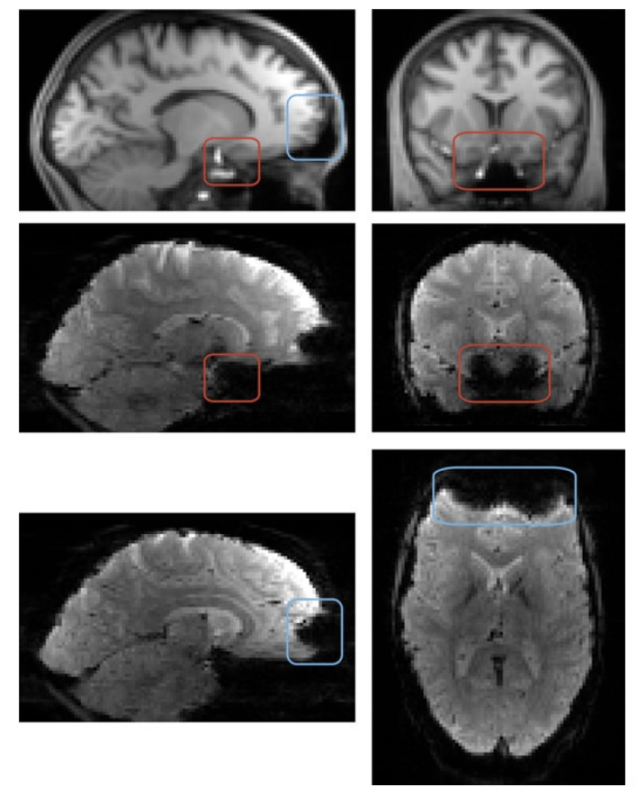
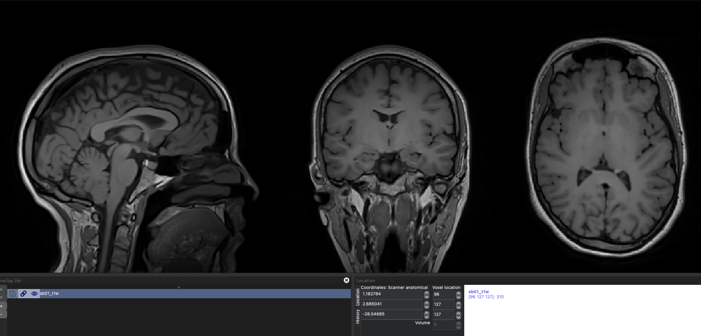
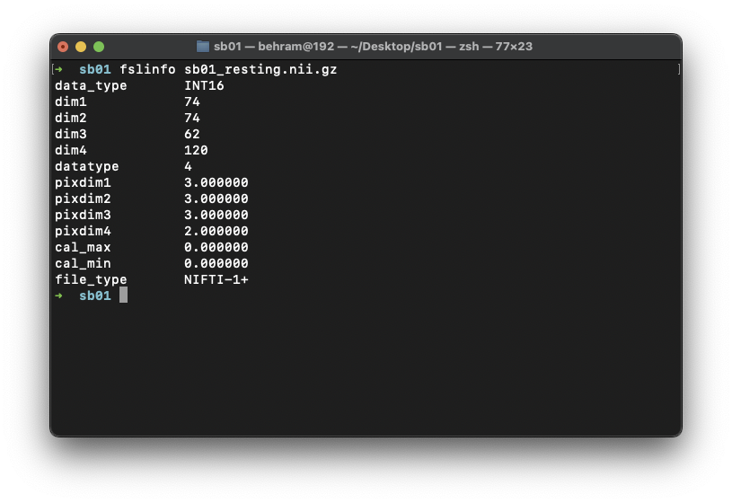

fMRG çalışması için analiz basamakları nelerdir?
Bir fMRG çalışması ve analiz için temel basamaklar şunlardır. - MRG çekim ve dataların toplanması - Dataların analize hazırlanması (kalite kontrol,anonimizasyon, isimlendirme, düzenleme, formatlama vb) - Dataların ön-işlemlemesi - Deney dizaynına göre grup analizi
Tabii ki her bilimsel çalışmada olması gereken hipotezin oluşturulması, pilot çalışma yapılması gibi adımlar da ihmal edilmemelidir.
MRG datasının alınması (Data acquisition)
Daha önce bahsettiğimiz gibi fonksiyonel MRG datası temel olarak 3 boyutlu beyin resimlerinin zaman ekseninde arka arkaya eklenmiş halidir. Frame-rate'i çok düşük olan bir film gibi düşünülebilir. Bu datanın mekansal çözünürlüğü iyi ancak zamansal çözünürlüğü MRG'nin fiziksel kısıtlamalarından dolayı çok iyi değildir.
Zamansal çözünürlükten kastımız, MRG cihazının beynin 3 boyutlu resmini, yani her bir voxelden gelen BOLD sinyalini, ne kadar zamanda bir alabildiğidir. Bu süre MRG terminolojisinde TR (Repetition Time) olarak adlandırılır. Tipik olarak bu süre 3Tesla bir cihazda 1-3 saniye arasındadır.
MRG datasının mekansal çözünürlüğü ise daha önce öğrendiğimiz voxellerin boyutları ile ilgilidir. Voxel boyutları çekimin özelliğine göre değişiklik gösterir. Yüksek çozünürlüklü yapısal çekimlerde voxellerin boyutları çok küçük olabilirken, fonksiyonel çekimlerde voxel boyutları daha büyük olmak durumundadır.
Voxel boyutları ile ilgili bilimsel çalışmalar açısından dikkat edilmesi gereken bir husus vardır. Klinikte her ne kadar major bir öneme sahip olmasa da bilimsel çalışmalarda voxellerin izometrik boyutlarda olması tavsiye edilir. Yani beyni böldüğümüz kutucukların her kenarının aynı boyda olması tavsiye edilir.
Gerekli sekanslar
Verimli bir fMRG çalışması için çekimde fonksiyonel sekansın yanı sıra en azından bir sekans yüksek çözünürlüklü T1 ağırlıklı sekans olması gerekir.
Bunun yanı sıra çekim esnasında manyetik alanda inhomojonitelerden oluşacaktır. Farklı dokular manyetik alana farklı tepkiler gösterirler. Özellikle hava ve beyin dokusunun manyetik alana gösterdiği yanıtlar çok farklıdır. Bu sebepten dolayı havayla yakın temas içinde olan bölgeşer, özellikle frontal sinüs çevresinde sinyal kaybı oluşabilir. Bu inhomojonitelerden oluşabilecek artefaktların temizlenmesi ve en iyi sinyalin elde edilmesi için fieldmap sekanslarının da çekime eklenmesi yine tavsiye edilir.

Çekim sonrası ne yapılmalı?
Çekim sonrası datalar MRG cihazından export edilir. Evrensel olarak medikal cihazlar görüntüleri DICOM formatında export eder. Ancak analiz için DICOM formatı uygun değildir. Analiz öncesinde dataların hem daha verimli hem de daha düzenli olan NIFTI formatına dönüştürülmesi gerekir.
Bunun için ücretsiz olarak kullanıma sunulmuş dcm2niix adlı bir program mevcuttur. Bu ders kapsamında dataları NIFTI formatında kullanmaya başlayacağımız için bu dönüştürme adımını atlayacağız.
Datalar NIFTI formatına dönüştürmeden önce veya sonra, mümkünse çekimin hemen sonrasında kontrol edilmelidir. Yanlış veya eksik export etme, bozuk çekim vs gibi durumların çalışmanın sonu yerine çekim alınırken farkedilmesi çok büyük zaman kayıplarının önüne geçilmesini sağlayabilir.

fslinfo ile datanın gözlemlenmesi

Yukarıdaki resimde gördüğümüz sayıları değerlendirelim - dim4'e karşılık gelen sayı 120. Bu demek oluyor ki bu fonksiyonel çekimde 120 adet volume var. Yani 120 kez 3 boyutlu çekim alıp zamansal düzlemde eklenmiş. - pixdim1, pixdim2 ve pixdim3 voxel boyutlarını gösteriyor. Yani 3mm x 3mm x 3mm boyutlarında voxellerden oluşuyor görüntümüz. - pixdim4 ise TR değerini gösteriyor. Yani 4.boyuttaki, zamansal düzlemdeki boyutunu gosteriyor bu sayı. Yanı bu datamızın TR değeri 2 saniye. Bu da demek oluyor ki her 2 saniyede 1 volume görüntü elde edilmiş.